A 3-week design sprint exploring the intersection of physical hardware and digital companion apps. Focused on seamless user flows across both touchpoints.
I began with quick user research on festival lockers by interviewing five festival-goers. The main insights that I uncovered were concerns about security and a desire for extra features. After sketching my ideas, I built an initial analog prototype featuring three security options: password, bracelet scanner, and phone app, allowing backup access if one method failed. Inside, I added a charging port and a simulated mini cooling system button, as these were highly valued by users. The locker measured 40×30 cm, thus big enough to fit most essential belongings.
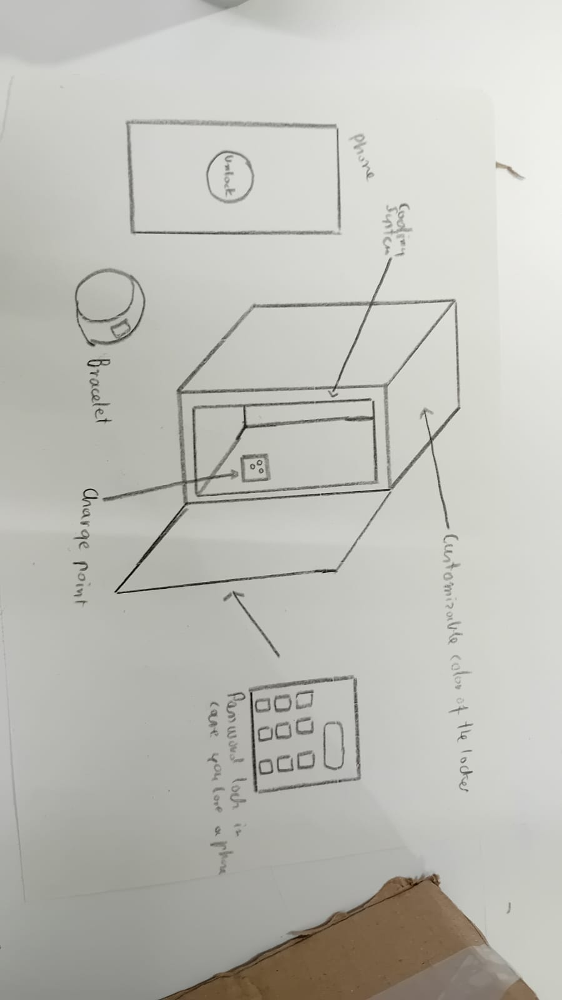
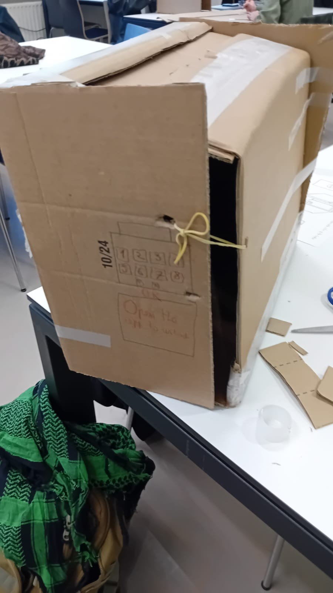
I ran usability tests with five classmates, asking them to complete key tasks while thinking aloud. They found the design sturdy and appreciated the charging port, but there was confusion about how the password system worked.
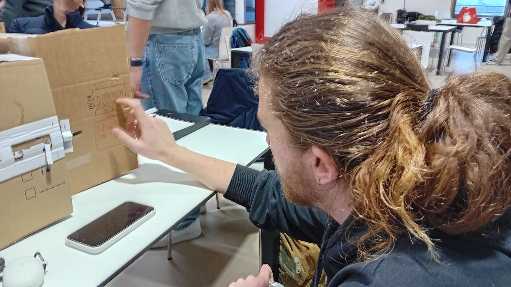
Combined password and scan data on one ticket for clarity.
Used consistent yellow accents as visual cues for scanning interaction.
Moved the cooling button inside and added a light for better visibility.
Included a built-in charging cable.
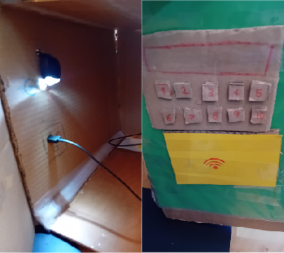
After moodboarding that helped me get into the aesthetics of the theme I designed a companion app that matched the lively festival atmosphere. The first version focused on minimal steps to access main functions. However upon testing the Heuristic evaluation showed strong aesthetics and usability but exposed issues in flow and security: the link between app and locker wasn't clear, and the remote unlock feature felt unsafe.
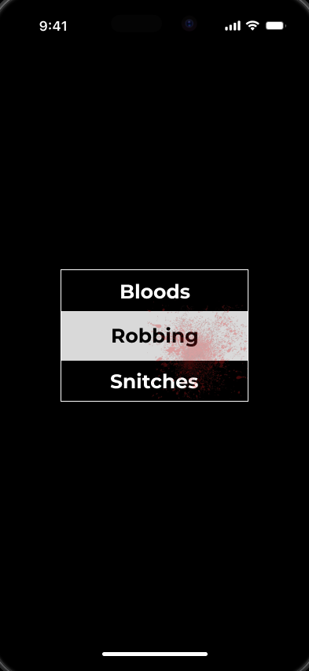
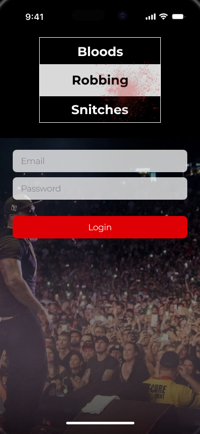
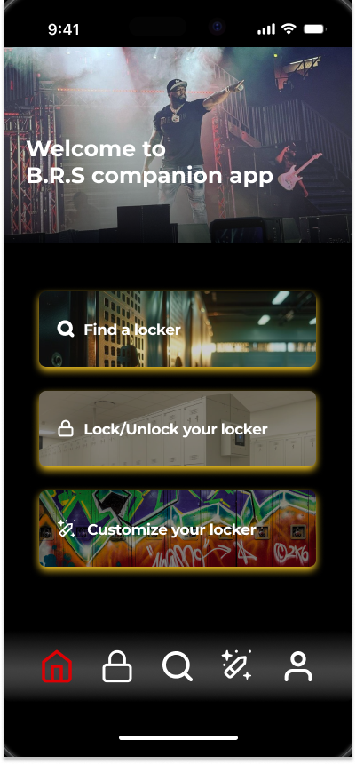
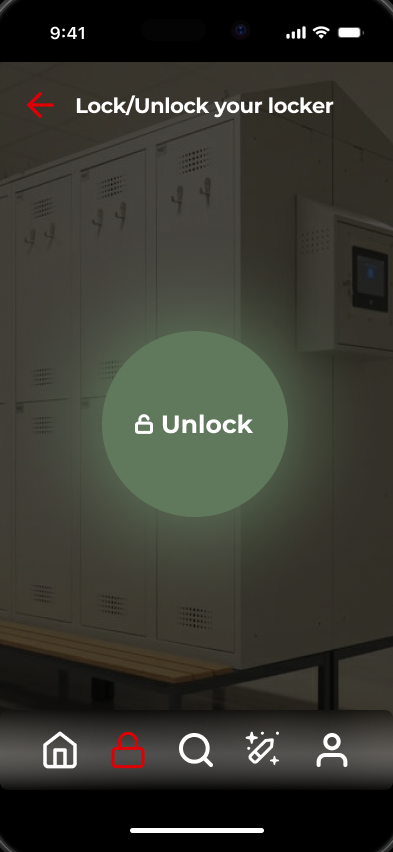
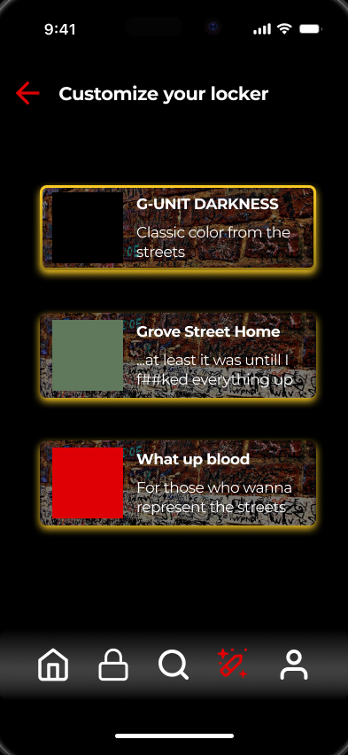
I redesigned the flow: users now start by scanning a QR code on their ticket to connect to the locker system and select an available locker. The locker can only be unlocked within close range for better security.
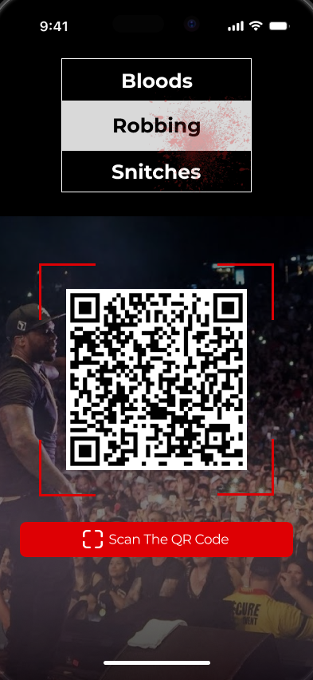
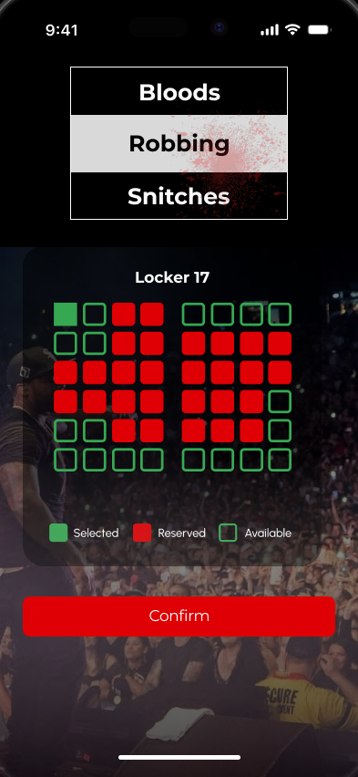
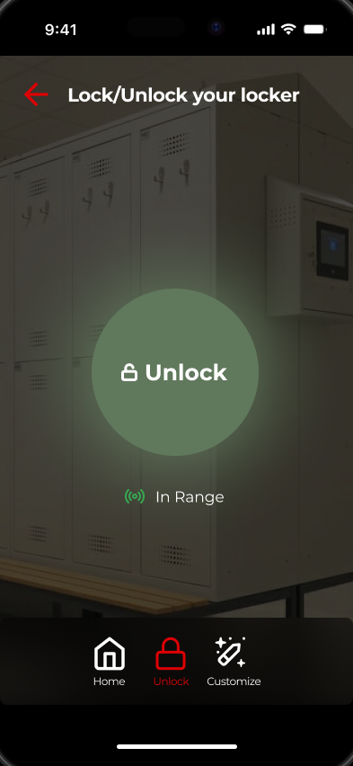
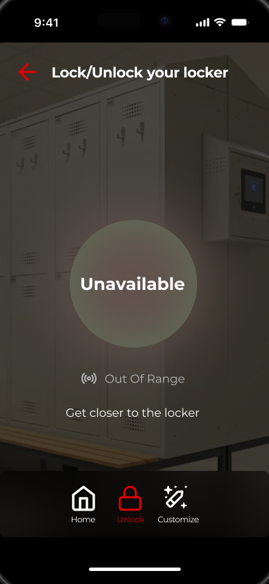
This project taught me the value of rapid iteration and feedback. Although early prototypes had flow gaps, I managed to quickly improve them. I enjoyed the idea of mixing physical and digital elements, which made the process more rewarding.